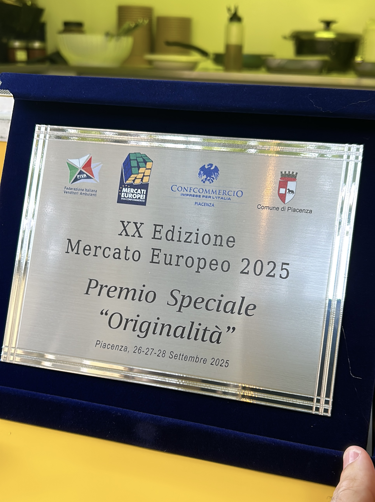
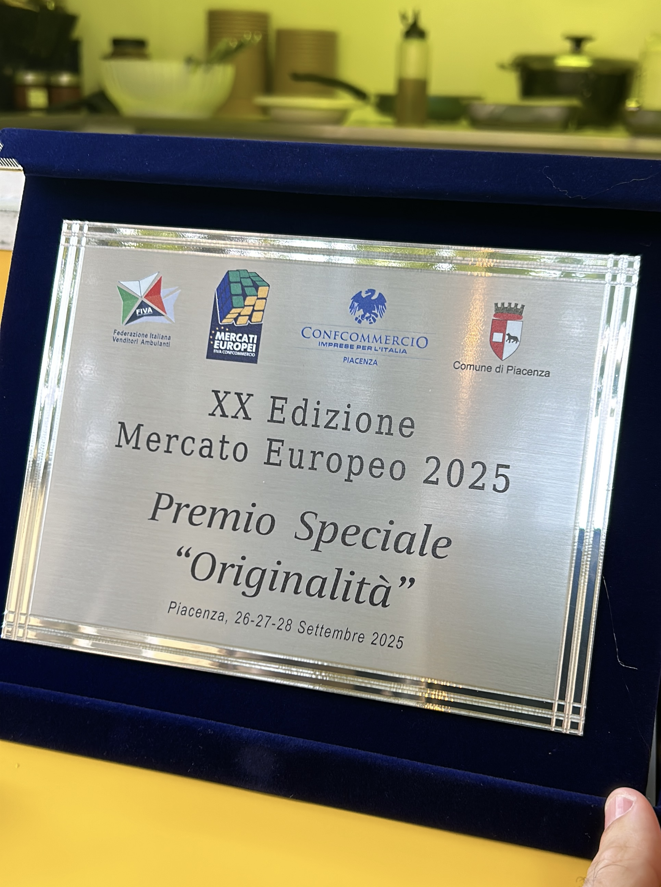

Raviolo al quadrato è il food truck dove la tradizione piacentina incontra creatività e gusto autentico. I nostri ravioli, rigorosamente quadrati, sono preparati con ingredienti genuini e selezionati con cura, per offrire sapori unici in ogni morso.
Dai classici ripieni come ricotta e spinaci, branzino e zucca, fino alle proposte più ricercate come cavallo, asinina, salame DOP piacentino, funghi porcini e non solo: ogni raviolo può essere servito con sughi gourmet o in versione fritta, pratica e "street", direttamente nel cono. E per chi ama le sorprese dolci, non mancano i nostri ravioli fritti con cuore di Nutella. Originalità, qualità e gusto sono il nostro biglietto da visita.


 



A Piacenza lo stracotto di cavallo è un piatto iconico: carne tenera, cotta lentamente nel Gutturnio con aromi e verdure, servita con purè o polenta. Nei nostri ravioli, invece, diventa un ripieno gustoso, dove la tradizione incontra la creatività. Da non perdere.
La carne d’asino racconta la cucina povera delle campagne piacentine, dove nulla si sprecava e tutto si valorizzava con lunghe cotture nel vino e nel pomodoro. Oggi la proponiamo nel nostro ragù di asinina: un sugo intenso e aromatico che regala ai ravioli un gusto deciso e autentico.
Il salame piacentino DOP nasce nelle cantine fresche dei colli, frutto di una sapienza norcina secolare. Lo usiamo tritato nel ripieno dei ravioli per dare corpo e fragranza. Piacenza è l’unica provincia europea con tre salumi DOP – Salame, Coppa e Pancetta – un primato che riempie d’orgoglio.
14 dicembre 2025 — Gropparello (Pc)
30 novembre 2025 — Castell'Arquato (Pc)
9/10 febbraio 2026 — Cesena
Feste, concerti, sagre, manifestazioni pubbliche o eventi privati: siamo disponibili per ogni occasione speciale
☎️ 3392682126
✉️ marco.caviglioni1@gmail.com
👨💻 Instagram: @ravioloalquadrato